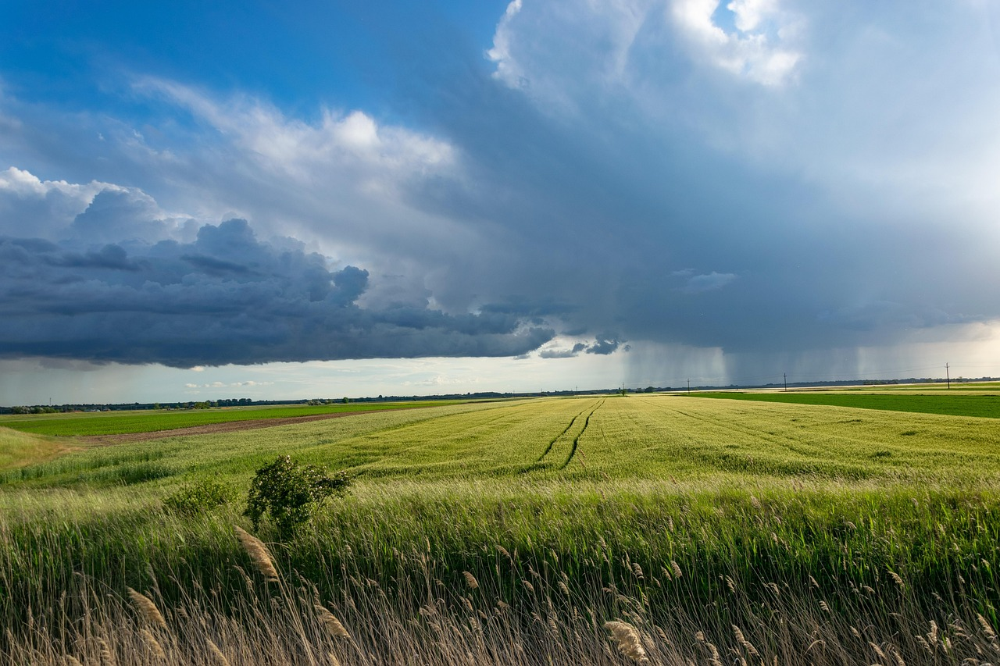

Découvrez l'univers de l'agriculture
L'agriculture est l'une des plus anciennes pratiques humaines. Découvrez les différentes étapes de la semence et de la culture.

L'agriculture est l'une des plus anciennes pratiques humaines. Découvrez les différentes étapes de la semence et de la culture.
Découvrez les meilleures pratiques pour choisir et semer les graines.

Apprenez comment cultiver efficacement pour maximiser votre récolte.
Pour plus d'informations, contactez-nous par e-mail ou suivez-nous sur les réseaux sociaux.